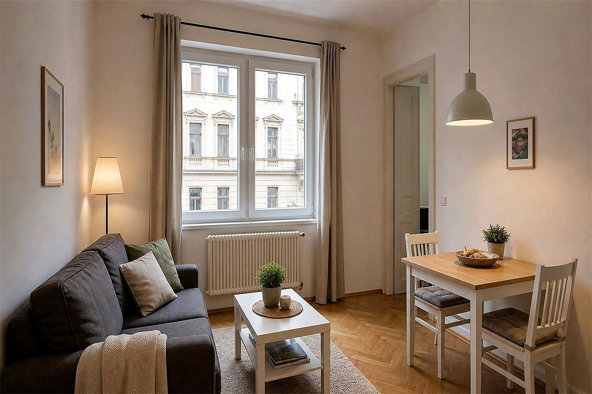
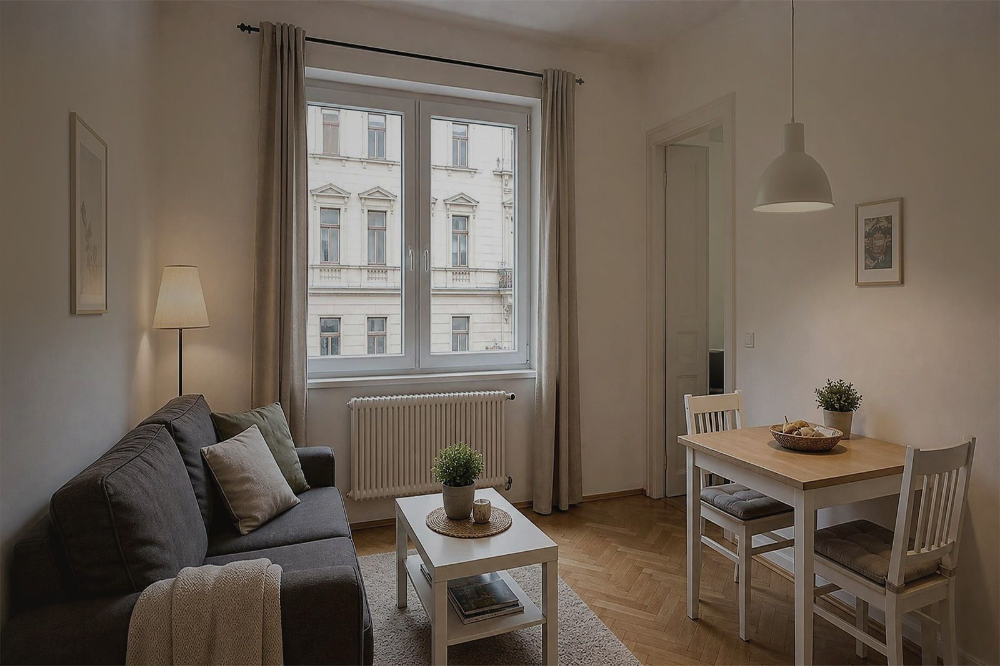
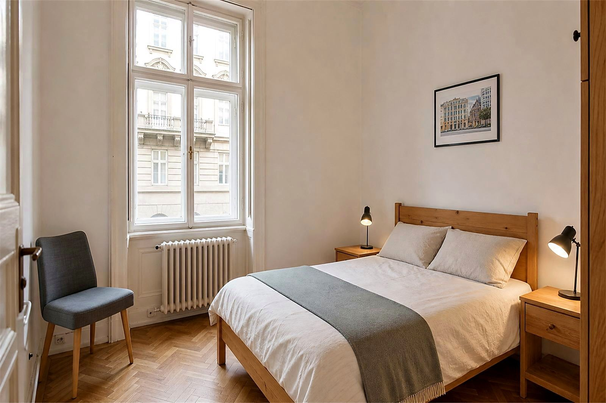
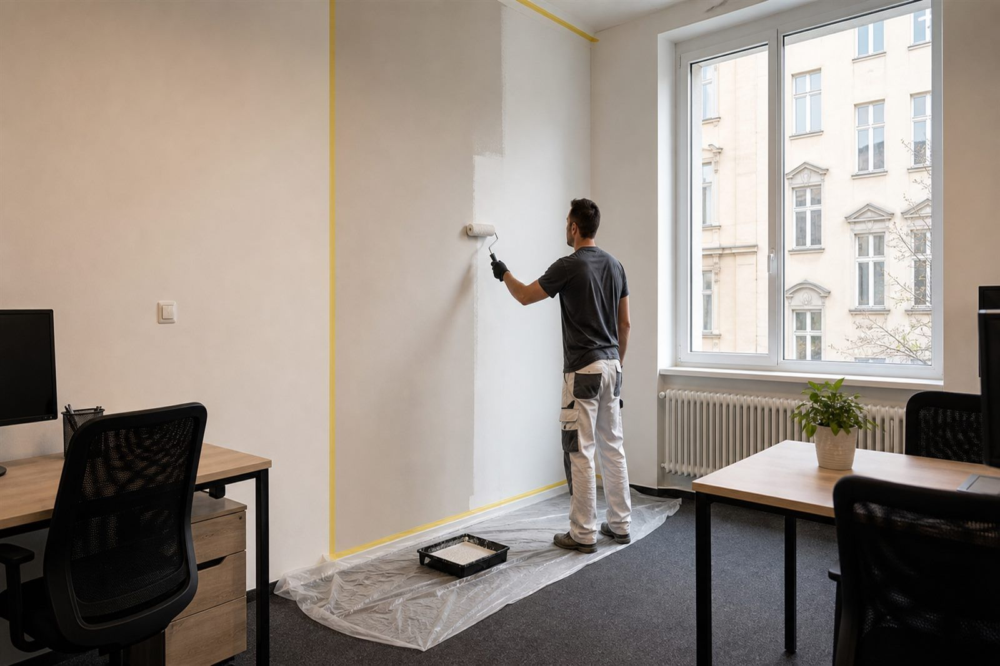

Gyors egyeztetés fotókkal, címmel, vendégérkezési határidővel és hozzáférési információval.
Airbnb karbantartás Budapesten
Airbnb lakások karbantartása Budapesten, vendégérkezéshez igazítva.
Gyakorlati ingatlankarbantartás Airbnb-házigazdáknak, külföldön élő tulajdonosoknak, lakásbefektetőknek és ingatlankezelőknek. Kisebb javítások, falfrissítés, szerelési feladatok, takarítási egyeztetés, fotós visszajelzés és magyar-angol WhatsApp kommunikáció budapesti lakásokhoz.

Vendégkész állapot
Fotók, feladatlista és gyors WhatsApp egyeztetés.
Kérés szerint fotós dokumentáció a kiinduló állapotról, a javításokról és az átadásra kész eredményről.
Belvárosi lakásokhoz, társasházakhoz, rövid távú kiadáshoz és távol élő tulajdonosokhoz igazítva.
Az oldalon szereplő képek illusztrációk, amelyek tipikus munkafolyamatokat és várható eredményeket mutatnak.
01
Miért más az Airbnb lakás karbantartása?
Egy rövid távú kiadásban működő budapesti lakásnál a kisebb hibák gyorsabban válnak üzleti problémává. Egy kilazult fogantyú, falnyom, vízköves zuhanyzó, hiányzó rögzítés vagy rendezetlen erkély nem mindig nagy műszaki feladat, de a vendégélményt és az értékelés előtti benyomást azonnal befolyásolhatja.
Vendégérkezéshez igazított időzítés
A javítási sorrendet a következő érkezés, takarítás, bejutás és sürgősség alapján érdemes meghatározni.
Távollévő tulajdonosnak is átlátható
A fotók, rövid feladatlista és WhatsApp egyeztetés segít dönteni akkor is, ha a tulajdonos nincs Budapesten.
Vendégkész, nem túlígért eredmény
A cél a tiszta, rendezett, használható állapot, nem irreális luxusátalakítás vagy nem ellenőrizhető ígéret.
02
Mit tartalmazhat az Airbnb karbantartás?
A pontos feladatlista mindig az ingatlan állapotától, a határidőtől és a hozzáféréstől függ. Egy jó Airbnb karbantartási folyamat nem kever össze mindent: külön kezeljük a javítást, a festést, a takarítási egyeztetést és azokat a pontokat, amelyekhez tulajdonosi jóváhagyás kell.
Kisebb javítások
Fogantyúk, polcok, zsanérok, ajtóigazítás, kilincsek, rögzítések és olyan apró hibák, amelyek vendégváltáskor erősen láthatóak.
Faljavítás és festési frissítés
Falnyomok, kisebb repedések, glettelés, javítófestés vagy teljesebb szobafrissítés, ha a lakás fotózás vagy vendégérkezés előtt fáradtnak hat.
Takarítási egyeztetés
Vendégérkezés, költözés vagy javítás után tisztázni lehet, milyen átadási állapot szükséges, és mi számít külön karbantartási tételnek.
Vendégkárok utáni rendezés
Látható sérülések, foltok, törött vagy hiányzó kisebb elemek fotók alapján előszűrhetők, majd reális feladatlistába rendezhetők.
Fotós dokumentáció
Kérés szerint a kiinduló állapot, a fontos részletek és az elkészült javítás is fotókon követhető.
Kapcsolódó szolgáltatások
Ha a feladat nagyobb festést, ezermester munkát, takarítást vagy általános ingatlankarbantartást igényel, a megfelelő szolgáltatási irányba tereljük.
03
Tipikus Airbnb karbantartási helyzetek
A legtöbb Airbnb karbantartási igény rövid határidővel és kevés információval indul. Ezért fontos, hogy a fotók, a hozzáférés, a vendégérkezés időpontja és a döntési pontok gyorsan egy helyre kerüljenek.
- Vendégváltás előttFalnyomok, laza elemek, fürdőszobai részletek és látható rendetlenség priorizálása a következő érkezés előtt.
- Tulajdonos külföldönA tulajdonos fotók alapján is láthatja, mi sürgős, mi várhat, és mihez kell külön jóváhagyás.
- Fotózás vagy új hirdetés előttEgy kisebb falfrissítés, tisztább elrendezés és rendezetebb részletek sokat javíthatnak a bemutathatóságon.
- Ismétlődő apró hibákA visszatérő kis hibákat érdemes egy feladatlistába rendezni, nem minden vendég után külön tűzoltásként kezelni.



A képek illusztratív példák, és nem konkrét elkészült ügyfélprojektek. A cél a tipikus helyzetek és az elvárt vendégkész állapot bemutatása.
04
Vendégváltási ellenőrzés, hozzáférés és karbantartási munkatartalom
Airbnb lakásoknál a következő foglalás ideje, a takarítási ablak és a bejutás gyakran ugyanannyira fontos, mint maga a javítás. A szolgáltatás a fizikai karbantartásra, kisebb javításokra, vizuális ellenőrzésekre, fotós visszajelzésre és az egyeztetett hozzáférésre koncentrál, nem teljes körű Airbnb-kezelésre.
Vendégek közötti ellenőrzés
Kijelentkezés után vagy érkezés előtt ellenőrizhetők a kilincsek, fogantyúk, lámpák, elemek, polcok, bútorok, falnyomok, fürdőszobai és konyhai látható hibák. A cél, hogy a következő vendég előtt a kockázatos pontok ne maradjanak észrevétlenek.
Sürgős kisebb javítás érkezés előtt
Ha eltörik egy fogantyú, kilazul egy szerelvény, nem működik egy lámpa vagy bizonytalan egy bútor, a kisebb javítási és szerelési feladatok külön egyeztethetők. Rövid határidőnél a kapacitás, hozzáférés és a feladat mérete dönt.
Ha a takarítás közben derül ki a hiba
Vendégváltáskor gyakran a takarítás közben látszik meg egy falnyom, vízkő, laza polc vagy hiányzó alkatrész. A takarítási egyeztetés és a javítási lista külön kezelése segít, hogy ne keveredjen össze a tisztítás és a karbantartás.
Fotós jelentés és kárrögzítés
Külföldön élő tulajdonosoknak és távoli házigazdáknak a fotók segítenek megérteni a kiinduló állapotot, a javítási igényt és az elkészült munkát. Tágabb tulajdonosi koordinációhoz lásd a külföldi tulajdonosoknak szóló ingatlankezelési támogatást.
Mit tartalmazhat?
Fizikai karbantartás, kisebb javítások, vendég előtti vizuális ellenőrzés, hozzáférés egyeztetése, fotós visszajelzés, faljavítási irány és szükség esetén festési vagy faljavítási feladatok előkészítése.
Mi nem része a szolgáltatásnak?
Nem vállalunk foglaláskezelést, ároptimalizálást, adózási vagy jogi adminisztrációt, teljes co-hostingot vagy 24/7 vészhelyzeti ígéretet. Kültéri, udvari vagy kisebb zöldfelületi feladatoknál külön kertfenntartási egyeztetés lehet releváns.
05
Hogyan működik a folyamat?
A cél az, hogy a vendégérkezéshez vagy tulajdonosi ellenőrzéshez kapcsolódó feladatok ne szóródjanak szét külön üzenetekben. A legfontosabb információk egy rövid, kezelhető folyamatba kerülnek.
Fotók és határidő
Küldje el a látható problémákat, címet vagy kerületet, hozzáférést és a következő vendég érkezését.
Reális feladatlista
Tisztázzuk, mi dönthető el fotó alapján, mi sürgős, és mi igényel helyszíni pontosítást.
Szervezett munka
A munka az egyeztetett pontokra koncentrál. Új feladat esetén külön jóváhagyás kérhető.
Fotós visszajelzés
Kérés szerint fotók mutatják a fontos részleteket és a vendégkész átadási állapotot.
06
Miért a Budapest Property Services?
Airbnb ingatlanoknál a bizalom nem hangzatos ígéretekből épül, hanem abból, hogy a kommunikáció tiszta, a feladatlista érthető, a fotók segítenek dönteni, és az időzítés figyelembe veszi a következő vendéget.
Angol nyelvű egyeztetés
Külföldi tulajdonosokkal, házigazdákkal és kezelőkkel magyarul vagy angolul lehet egyeztetni.
Budapesti helyismeret
A szolgáltatás budapesti lakások, társasházak és rövid távú kiadás gyakorlati helyzeteihez igazodik.
Rendezett, követhető munka
A fotók, a feladatlista és a jóváhagyási pontok segítenek elkerülni a félreértéseket.
07
Kapcsolódó szolgáltatások Airbnb lakásokhoz
Ha a feladat túlmutat az Airbnb karbantartáson, ezek a szolgáltatási oldalak segítenek pontosabb irányt választani.
08
Gyakori kérdések Airbnb karbantartásról
Gyakorlati válaszok házigazdáknak, külföldön élő tulajdonosoknak, befektetőknek és ingatlankezelőknek.
Vállalnak Airbnb lakáskarbantartást Budapesten?
Igen. Airbnb lakásoknál kisebb javítások, falfrissítés, szerelési pontok, takarítási egyeztetés és fotós visszajelzés is szóba jöhet. A vállalhatóság mindig a hozzáférés, határidő és feladatlista alapján dől el.
Tudnak segíteni, ha külföldön élek?
Igen, ha a bejutás és a döntési jogosultság tiszta. A fotók és WhatsApp üzenetek segítenek abban, hogy a tulajdonos távolról is értse, mi történik a lakásban.
Lehet vendégváltások között dolgozni?
Sok esetben igen, de rövid határidőnél a kapacitás, a bejutás és a munka mérete döntő. Már az első üzenetben érdemes elküldeni a következő vendég érkezési idejét.
Küldenek fotókat a munkáról?
Kérés szerint igen. Fotók készülhetnek a kiinduló állapotról, a fontos hibákról, a munka egy-egy lépéséről és a vendégkész átadási állapotról.
Vállalnak falnyomokat és festési javításokat?
Igen, falnyomok, kisebb repedések, glettelés és javítófestés egyeztethető. Nagyobb festésnél a felület, szín, határidő és bútorozottság tisztázása fontos.
Takarítást is lehet kérni?
Takarítási egyeztetés lehetséges, de a takarítás és a karbantartás feladatlistáját külön érdemes kezelni. Így egyértelmű marad, mi tisztítási feladat és mi javítás.
Segítenek vendégkár után?
Látható vendégkároknál fotók alapján indulhat az egyeztetés. Ilyenkor fontos jelezni, mi tört el, mi hiányzik, van-e sürgős vendégérkezés, és kell-e külön jóváhagyás.
Ellenőrizhető a lakás kijelentkezés után?
Igen, ha a hozzáférés és az időablak előre tiszta. Ilyenkor a látható hibákra, vendég által jelzett problémákra, falnyomokra, laza elemekre és a következő érkezést befolyásoló pontokra koncentrálunk.
Tudnak sürgős javítást intézni a következő check-in előtt?
Sürgős feladatoknál a kapacitás, a bejutás, az alkatrész elérhetősége és a munka mérete dönt. Nem ígérünk 24/7 vészhelyzeti rendelkezésre állást, de gyorsan tisztázható, mi reális a vendégérkezés előtt.
Mi történik, ha a takarító talál hibát?
Ilyenkor érdemes fotót, rövid leírást és a következő vendég érkezési idejét küldeni. A takarítási feladat és a karbantartási javítás külön listába kerül, így egyértelmű marad, mire kér jóváhagyást a tulajdonos.
Cserélnek elemeket, izzókat vagy kisebb szerelvényeket?
Igen, sok ilyen apró feladat egyeztethető, ha világos, pontosan milyen elemről van szó. Például távirányító elem, lámpa, kilincs, fogantyú vagy kisebb rögzítés ellenőrzése gyakori Airbnb-karbantartási helyzet.
Meg kell jelennem személyesen?
Nem feltétlenül, ha a bejutás, kulcskezelés és döntési jogosultság előre egyértelmű. Külföldi tulajdonosoknál különösen fontos, hogy a feladatlista, a fotók és a jóváhagyási pontok írásban is követhetők legyenek.
Egyeztethetik a bejutást takarítóval vagy co-hosttal?
Igen, ha a tulajdonos vagy házigazda ezt előre jóváhagyja. Fontos megadni, ki ad hozzáférést, mikor érhető el a lakás, és ki dönthet, ha a helyszínen új feladat merül fel.
Milyen tényezők befolyásolják az árajánlatot?
A feladat típusa, sürgőssége, a lakás állapota, a hozzáférés, az alkatrész vagy anyag szükségessége és az, hogy kell-e külön fotós dokumentáció. Fix ár helyett a valós feladatlista alapján érdemes egyeztetni.
Mi nem tartozik az Airbnb karbantartásba?
A szolgáltatás nem foglaláskezelés, vendégüzenetek kezelése, árstratégia, adózási adminisztráció, jogi megfelelőség-kezelés vagy teljes co-hosting. A fókusz a fizikai állapoton, kisebb javításokon, egyeztetésen és fotós visszajelzésen van.
Beszélnek angolul?
Igen. Magyar és angol egyeztetés elérhető, ami különösen hasznos külföldi tulajdonosoknak, Airbnb-házigazdáknak és ingatlankezelőknek.
Mit küldjek az első üzenetben?
Küldjön 3-5 fotót, budapesti címet vagy kerületet, vendégérkezési határidőt, hozzáférést és röviden azt, mi sürgős. Ez segít reálisan felmérni a következő lépést.
Vannak fix árak vagy garanciák az oldalon?
Nem adunk irreális, előre nem ellenőrizhető ígéreteket. Minden lakás, határidő, hozzáférés és feladatlista más, ezért először a valós állapotot kell tisztázni.
Következő lépés
Küldjön néhány fotót az Airbnb lakásról, és egyeztessük a reális következő lépést.
A legjobb kezdés: fotók a látható hibákról, a budapesti cím vagy kerület, a következő vendég érkezése, hozzáférés és rövid leírás arról, hogy karbantartásról, takarítási egyeztetésről, festési javításról vagy sürgős vendégkész előkészítésről van-e szó.
3-5 fotó
Vendégérkezés
Hozzáférés
Budapesti cím
+36 20 667 1832contactcreativefabrication@gmail.com
Fotók küldése WhatsAppon
Telefonszám másolásaEmail küldésecontactcreativefabrication@gmail.com
Ingatlankarbantartás
Airbnb takarítási egyeztetés
Festés és faljavítás
Ezermester szolgáltatások
Vissza a főoldalra
Elsődleges terület: Budapest és közvetlen környéke. Magyar és angol egyeztetés.